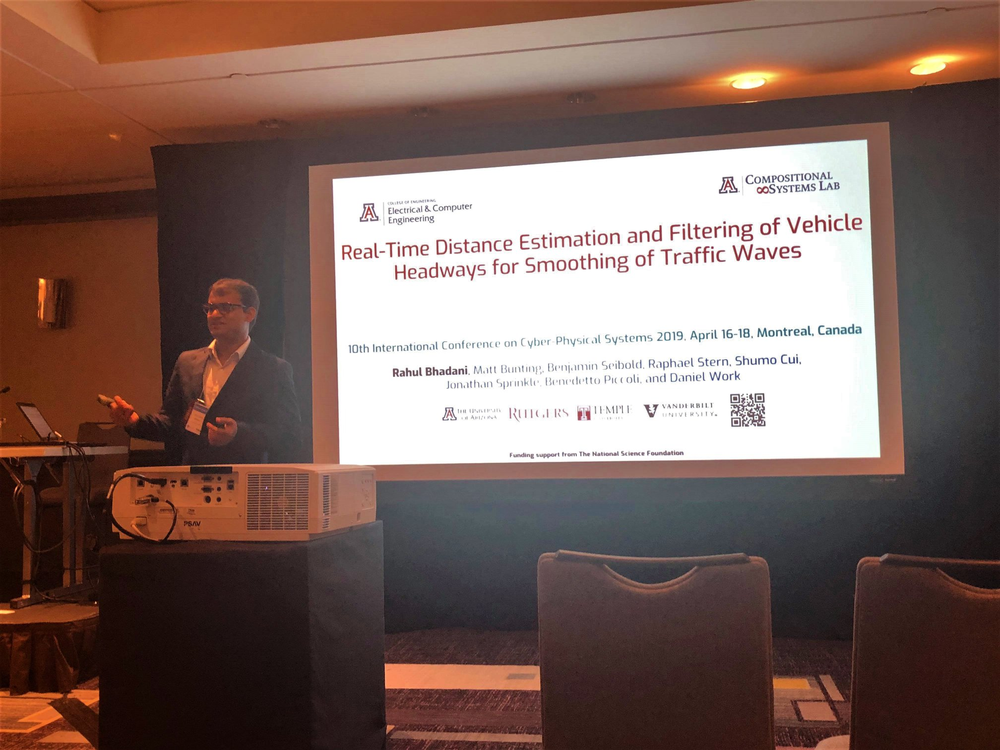

Conference talk at ICCPS 2019 in Montreal
Rahul Bhadani, and Prof. Jonathan Sprinkle traveled to Montreal to present their work on traffic-wave dissipation and smoothing in collaboration with Dr. Dan, Dr. Seibold and Dr. Piccoli. The work was presented by Rahul Bhadani in the 10th IEEE/ACM International Conference on Cyber-Physical Systems.

Conference talk at IEEE CDC 2018
Rahul Bhadani, and Prof. Jonathan Sprinkle traveled to Miami Beach to present their work on controller design that helped demonstrate that a fewer number of autonomous vehicles have signficant impact on smoothing out oscillatory traffic in mixed urban traffic. This research work was conducted in collaboration with Dr. Dan, Dr. Seibold and Dr. Piccoli. The work was presented by Rahul Bhadani in the 57th IEEE Conference on Decision and Control.

Best Paper Award at IEEE VNC 2018
Rahul Bhadani, Prof. Jonathan Sprinkle and Matt Bunting collaborated with Michele Segata and Renato Lo Cigno from the University of Trento, Italy to work on LiDAR Error model for cooperative driving simulation. The work was presented by Rahul Bhadani at IEEE Vehicular Networking Conference in Taipei City, Taiwan on December 2018, for which the team won the best paper award.